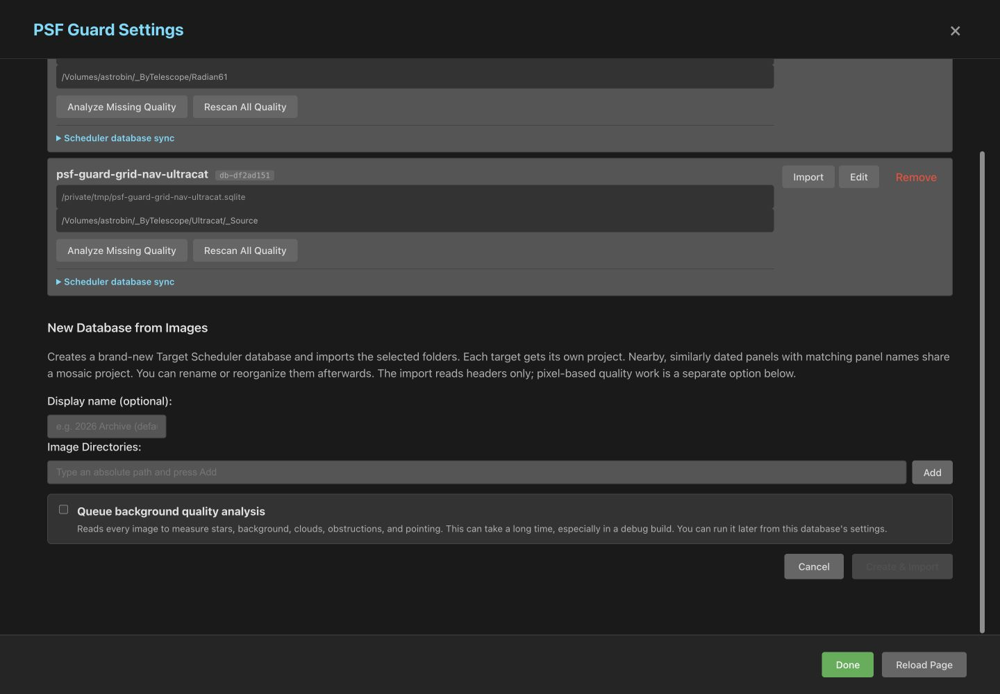
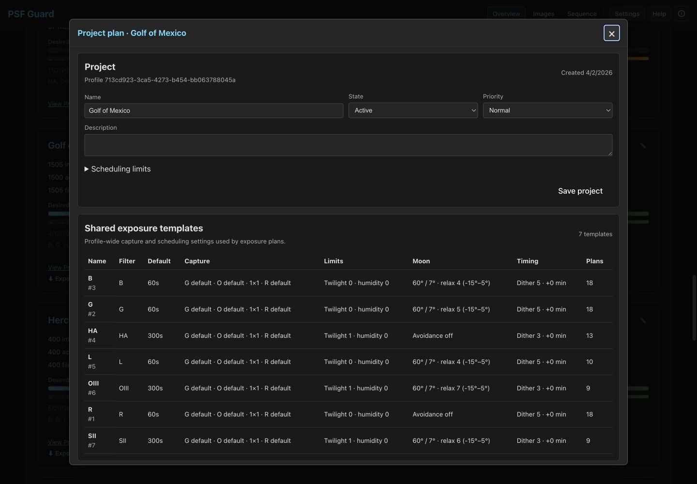
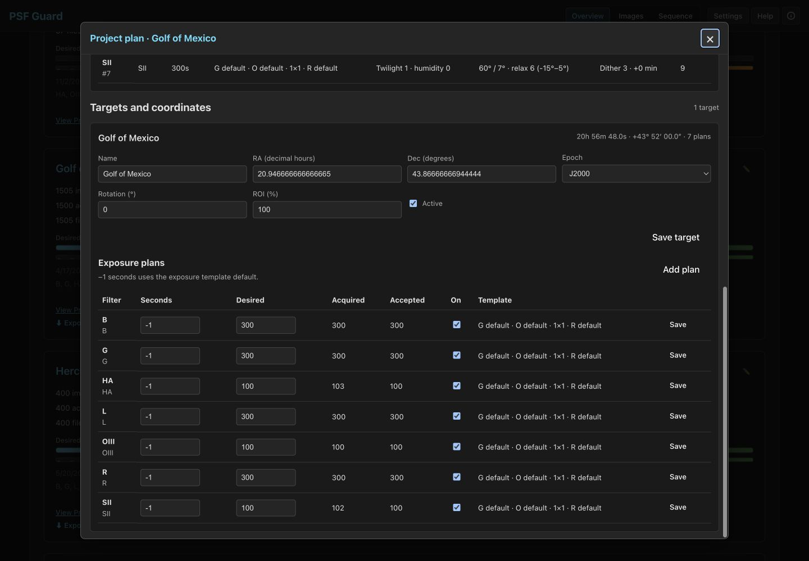

Import FITS folders and plan the project
Start from plain FITS folders, build a Target Scheduler-compatible database, review the projects and plans PSF Guard derives from the headers, then add costly quality evidence in the background.
Import reads headers first and leaves quality work for later.
Create a database from images
The desktop app always allows database changes. For the web server, bind to a trusted interface and opt in:
psf-guard server --host 127.0.0.1 --allow-database-managementOpen Settings → New Database from Images, add one or more absolute image directories, and choose Create & Import. Invalid paths stay in the form and the error names the missing directory.

The UI puts the SQLite file in databases/ beside PSF Guard's
registry and shows the exact path on the database card. Reused names get a
numeric suffix. The CLI creates the file at the path you give it:
Use create-db for a new archive or import to add frames.
psf-guard create-db ./archive.sqlite /data/lights /data/more-lights \
--name "Archive"Use --dry-run to preview a CLI import without keeping the new
file, or --no-register to keep it out of the shared registry.
What PSF Guard derives
PSF Guard writes a full Target Scheduler schema. Imported frames begin as Pending. Header data becomes projects, targets, shared exposure templates, exposure plans, and acquired-image rows:
OBJECTnames define targets. Each target gets one project by default, even across many nights.- Different telescope, camera, focal length, or binning signatures never share a project.
- Panel-style targets share a mosaic project only when the name root, coordinates, and dates agree. The default date window is 14 days and the center limit is five degrees.
- The median header position becomes the target coordinate. Target Scheduler stores RA in decimal hours and Dec in degrees.
- Filter, gain, offset, binning, and numeric readout mode define a shared exposure template. Its most common exposure length becomes the default.
- Each template and exposure length becomes a plan. Frame counts seed the desired and acquired counts.


Import more frames
Choose Import on a configured database. PSF Guard first shows a dry preview. It skips basenames already present, attaches new frames to an existing target by object name or coordinates within 0.5 degrees, and creates new structure only for unmatched frames. Confirm the preview to write it.
psf-guard import archive ./new-lights --dry-run
psf-guard import archive ./new-lightsThe settings page reads job state from the server when it opens. Closing or reloading the page does not hide a running import; the progress view resumes. One import can run per database.
Backfill quality later
Each database card has two low-priority actions:
- Analyze Missing Quality keeps valid cached evidence and fills gaps.
- Rescan All Quality recomputes star counts and every cached quality signal.
The job works one target at a time, reports progress, and yields to interactive preview or scan work. The N.I.N.A. Fast detector supplies star count and HFR, so new measurements stay comparable with Target Scheduler. Full-star data also feeds flux-based photometry; the pass adds spatial cloud and obstruction metrics plus fresh pointing evidence. A server restart stops the in-memory job, but the persistent cache lets the next run skip completed work.
Review and edit the plan
Open Overview → Plan & coordinates to inspect project state and limits, target name and coordinates, rotation, ROI, shared templates, and filter plans. With database management enabled, edit those fields, add a plan, or correct imported project and target grouping.
Sync with the telescope
Preview each change before applying it.
Add both databases in Settings, then expand Scheduler database sync. Both UI actions show a dry preview before Apply:
- Full pull copies new or changed projects, targets, templates, plans, captures, and grades from the telescope into the local database. Local reviewed grades win.
- Planning push sends projects, targets, templates, plans, and rule weights back to the telescope. It leaves telescope image rows, capture counts, and grades alone.
psf-guard sync pull --from telescope.sqlite --to archive.sqlite --dry-run
psf-guard sync planning --from archive.sqlite --to telescope.sqlite --dry-run
psf-guard sync grades --from archive.sqlite --to telescope.sqlite --dry-run